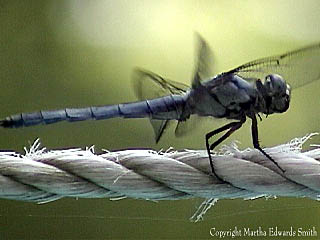
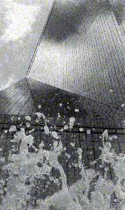
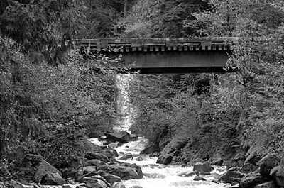
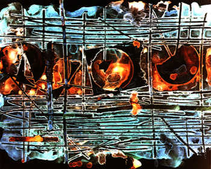
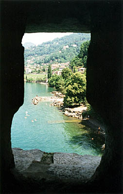

Dragonfly About to Take Flight
Photo by Martha Edwards SmithThis dragonfly happens to be a family friend. The rope from which he's about to take flight is above our little swimming pool. I have been taking hundreds of pictures with my SLR Minolta and have had great success with our new Sony Digital Camcorder. I am trying to see if it may be the same dragonfly that has come for three years--I have figured out how to tell them apart. .
Martha can be reached by e-mail at: elegantdoors@aol.com

Field Street Fountains: 1993
Photo by Angela SimsI used to spend the weekends as a tourist in my own city, learning about all the architecture and sculpture. It had not occured to me that a sculpture could be made out of water, and allowed to take a new shape each and every time it flowed. Such a unique shape could only be rivaled by the building it adorned, the I.M. Pei design for the Field Street Bank Building. Kodak Tri-X 400: f/5.6 250 Kodak RC III f/11 37s. w/ #4.0 filter
Angela can be reached via e-mail: aesintexas@yahoo.com

photograph by Craig Petterson
Shot on a hike at near Harrison Lake, in British Columbia, Canada. I like this picture because it shows thaat digital cameras can show lots of fine detail (shot with a Fuji S1).
Craig can be reached via email: craigpetterson@home.com

Photo by Sam Peters
Cliché-verre / C- print.
Sam can be reached via email: ptrseldr@yahoo.com

Photo by Minette Maré
I took this when I went on a trip through Europe in June 2000. It was taken in Montreux, out of one of the "windows" of Chateau de Chillon.
P.S. Where can I find out about places where I can send my photos for competitions, or simply places where I can see how my work compares with that of other amateur photographers? I am very interested in photography, and am currently a student of music, but would like to know how I compare with the field before I take a plunge into the unknown..
Minette can be reached via email:pekaneut@hotmail.com
Time & Place
page:
1 | 2
| 3 | 4
| 5 | 6 | 7
| 8 | 9
| 10
11 | 12
| 13 | 14
| 15 | 16
| 17 | 18
19 | 20
| 21 | 22
| 23 | 24
| 25 | 26
| 27